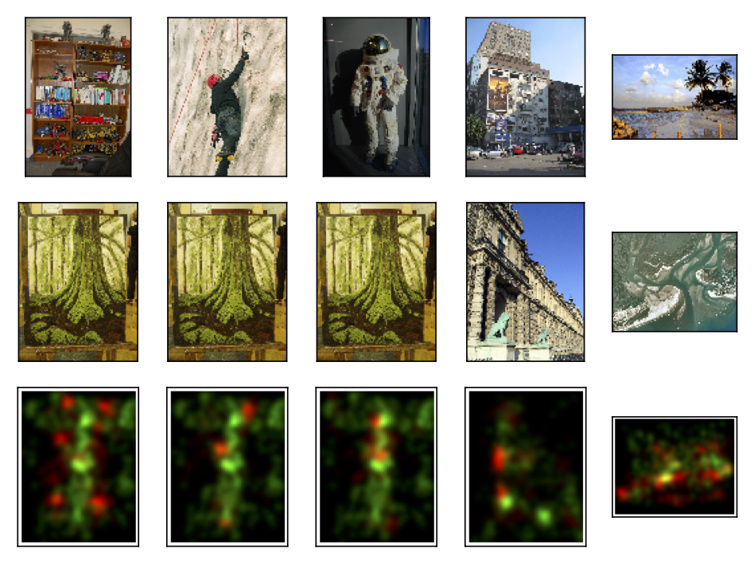

The Mental Image Revealed by Gaze Tracking
Humans involuntarily move their eyes when retrieving an image from memory. This motion is often similar to actually observing the image.
We suggest to exploit this behavior as a new modality in human computer interaction, using the motion of the eyes as a descriptor of the image.
Interaction requires the user's eyes to be tracked but no voluntary physical activity.
We perform a controlled experiment and develop matching techniques using machine learning to investigate if images can be discriminated based on the gaze patterns recorded while users merely think about image.
Our results indicate that image retrieval is possible with an accuracy significantly above chance.
We also show that this result generalizes to images not used during training of the classifier and extends to uncontrolled settings in a realistic scenario.
Download File "The Mental Image Revealed by Gaze Tracking"
[pdf, 5.5 MB]
Reference
Xi Wang, Andreas Ley, Sebastian Koch, David Lindlbauer, James Hays, Kenneth Holmqvist, and Marc Alexa. 2019. The Mental Image Revealed by Gaze Tracking. In CHI Conference on Human Factors in Computing Systems Proceedings (CHI 2019), May 4–9, 2019, Glasgow, Scotland UK. ACM, New York, NY, USA, 12 pages. https://doi.org/ 10.1145/3290605.3300839
Computational discrimination between natural images based on gaze during mental imagery
When retrieving image from memory, humans usually move their eyes spontaneously as if the image were in front of them.
Such eye movements correlate strongly with the spatial layout of the recalled image content and function as memory cues facilitating the retrieval procedure.
However, how close the correlation is between imagery eye movements and the eye movements while looking at the original image is unclear so far.
In this work we first quantify the similarity of eye movements between recalling an image and encoding the same image,
followed by the investigation on whether comparing such pairs of eye movements can be used for computational image retrieval.
Our results show that computational image retrieval based on eye movements during spontaneous imagery is feasible.
Furthermore, we show that such a retrieval approach can be generalized to unseen images.

Download File "Computational discrimination between natural images based on gaze during mental imagery"
[PDF]
Reference
Wang, X., Ley, A., Koch, S. et al. Computational discrimination between natural images based on gaze during mental imagery.
Sci Rep 10, 13035 (2020). https://doi.org/10.1038/s41598-020-69807-0
A consensus-based elastic matching algorithm for mapping recall fixations onto encoding fixations in the
looking-at-nothing paradigm
We present an algorithmic method for aligning recall fixations with encoding fixations, to be used in
looking-at-nothing paradigms that either record recall eye movements during silence or want to speed up data
analysis with recordings of recall data during speech. The algorithm utilizes a novel consensus-based elastic
matching algorithm to estimate which encoding fixations correspond to later recall fixations.
This is not a scanpath comparison method, as fixation sequence order is ignored and only position configurations
are used. The algorithm has three internal parameters and is reasonable stable over a wide range of parameter
values. We then evaluate the performance of our algorithm by investigating whether the recalled objects
identified by the algorithm correspond with independent assessments of what objects in the image are marked as
subjectively important. Our results show that the mapped recall fixations align well with important regions of
the images. This result is exemplified in four groups of use cases: to investigate the roles of low-level visual
features, faces, signs and text, and people of different sizes, in recall of encoded scenes. The plots from
these examples corroborate the finding that the algorithm aligns recall fixations with the most likely important
regions in the images. Examples also illustrate how the algorithm can differentiate between image objects that
have been fixated during silent recall vs those objects that have not been visually attended, even though they
were fixated during encoding.

Download File "A consensus-based elastic matching algorithm for mapping recall fixations onto encoding fixations in the
looking-at-nothing paradigm"
[PDF]
Reference
Wang, X., Holmqvist, K. & Alexa, M. A consensus-based elastic matching algorithm for mapping recall fixations onto encoding fixations in the looking-at-nothing paradigm.
Behav Res (2021). https://doi.org/10.3758/s13428-020-01513-1